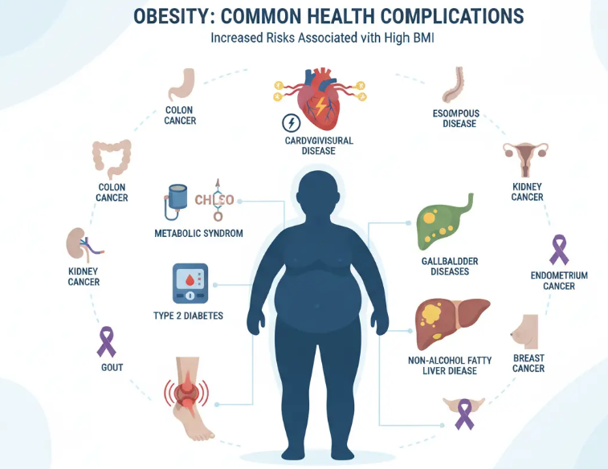

Qué implica la obesidad
La obesidad es una enfermedad crónica prevalente, compleja, progresiva y recidivante, caracterizada por una cantidad de grasa corporal anormal o excesiva
(adiposidad), que deteriora la salud. Está causada por la interacción compleja de
múltiples factores genéticos, metabólicos, conductuales y medioambientales.
Las complicaciones asociadas más comunes son:

Las personas que viven con obesidad se enfrentan a importantes prejuicios y estigmas, que contribuyen a aumentar la morbilidad y la mortalidad independientemente del peso o el índice de masa corporal.
El objetivo de la terapia es reducir el peso corporal mediante la reducción de la
masa grasa a largo plazo para mejorar los factores de riesgo y enfermedades asociadas a la obesidad y mejorar la calidad de vida. El tratamiento es multidisciplinar, y puede ser conservador mediante la dieta, el ejercicio físico, y el cambio del estilo de vida o quirúrgico como la cirugía bariátrica.
Mediante esta web que nos habla de la obesidad debes obtener información acerca de cómo mejorar los hábitos del paciente obeso. Fíjate en el punto 3 cambios en el estilo de vida ya que vas a tener una tarea en Teams al respecto.